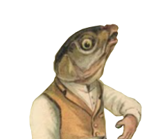
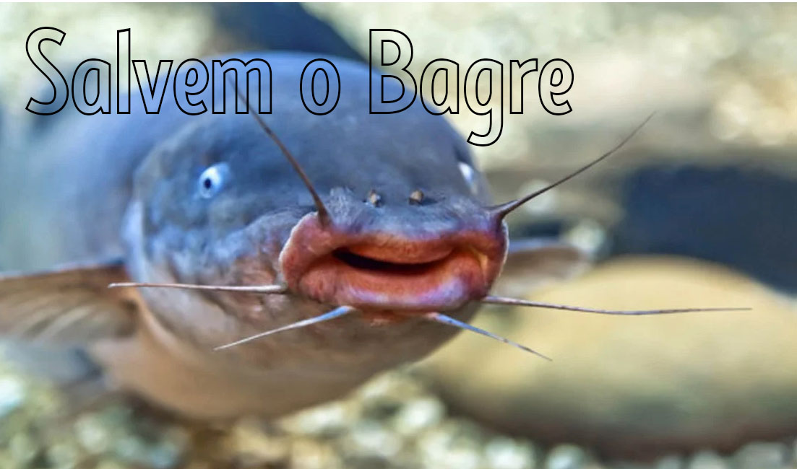

|  | home | Contate-nos | Quem somos nós |
|  |
Salvem os Bagres!Os bagres, também conhecidos como peixe-gato, por possuírem "bigodes" semelhantes aos dos felinos, são peixes de água doce existentes em todos os continentes. há alguns poucos tipos que vivem também em oceanos. Os bagres podem atingir um tamanho impressionante, tal como é o caso do siluro, que pode chegar a incríveis 4,5 metro de comprimento e pesar 300 quilos. Já as menores especies chegam a medir em torno de 5 centímetros, apenas. Estes fantásticos gatos marinhos não têm escamas, e algumas especies possuem uma espécie de armadura de lâmina de osso. Alguns contém um ferrão poçonhento em suas costas ou laterais. Algumas espécies de bagre constroem ninhos para abrigar seus ovos; outras carregam dentro de sua boca; se alimentam de quase todos os tipos de animais ou plantas, e vivem próximo ao fundo do dos rios e lagos. Realmente são super espécies favorecidas pela evolução, porém duas espécies deste magnífico peixe felino estão sofrendo com o risco de exinção iminente. De acordo com o Sema (Secretaria do Meio Ambiente e Infraestrutura), em um recomendação de pesquisa antes de qualquer adquirimento de peixes. Com base em critéros da União Internacional para a Conservação da Natureza (UICN) duas espécies de bagre se encontram ameaçados de extinção: Genidens barbus e Genidens planifrons. conforme decreto nº 51.797/2014 e em nível nacional conforme portaria n° 445/2014, do Ministério do Meio Ambiente (MMA), estes peixes foram incluídas na lista de fauna ameaçada de extinção no Rio Grande do Sul, e o principal argumento para tal inclusão seria o abrupto decrésimo populacional das espécies. Vale também citar que outras espécies ameaçadar são ilegalmente comercializadas, tais como: raia-viola, cação-anjo, tubarão-martelo, o peixe dourado e o surubim. A pena para o comércio ilegal de espécies ameaçadas incluem multa e apreensão do estoque irregular, e tambpem a suspenção do comércio. Recomenda-se a exijência da procedêncica do pescado e nota fiscal do produto. O intuito desta página é apenas alertar o risco de extinção desta belíssima espécie. Não discordamos da pesca esportiva e/ou consumo de peixes. Encorajamos a proteção de espécies ameaçadas e criação em cativeiro para fins reprodutivos. |
Todos os direitos reservados |